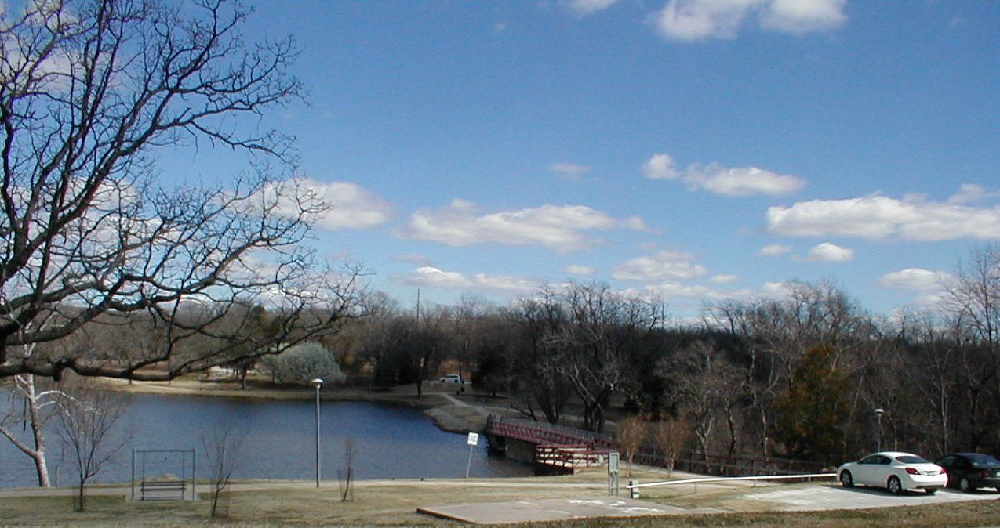

Winter Smith Park
Wintersmith Park in Ada was constructed by the Civilian Conservation Corps (CCC) in the 1930s. The CCC also constructed Wintersmith Lake, a lodge, stone bridges, trails and a public amphitheater within the park's 150 acres. Listed in the National Register of Historic Places, Wintersmith Park also includes a public swimming pool, courts for basketball, softball, volleyball and horseshoes, as well as a 1.5-mile lighted nature trail. Eight picnic pavilions, a playground, a Kiwanis amusement park and a four acre zoo enclosure with exotic animals round out the park's amenities. The stone amphitheater is a historic wonder built from natural stone found within Ada and nearby Fittstown in 1934. CCC stonemasons took three months to construct the amphitheater and it has since been restored to its original state. Visitors to Wintersmith Park can also visit the Jones Chapel Schoolhouse, also referred to as the Little Red Schoolhouse, a one-room schoolhouse that opened in 1907. The Campbell Cabin, located next to the schoolhouse, represents the early pioneer days of Ada. A sign on the cabin reads "Cecil & Nell Campbell 1609 E 18th ST."